01Значення води та її властивості
Вода — це не просто «рідина в рослині». Вона — середовище, у якому відбувається обмін речовин, учасник багатьох реакцій і «двигун» тиску, що тримає стебло прямим. Розберемо, скільки її потрібно й чому саме вода так добре підходить для життя.[1]
1.1Скільки води в рослині і навіщо вона потрібна
Клітини рослин містять 70–90 % води від сирої маси, а в різних органах її по-різному: у листках мезофітів (рослин помірного зволоження) — 85 % і більше, у молодих коренях — до 90 % і вище. Для нормального життя рослина має мати в середньому 75–80 % води в тканинах. Скільки її саме — залежить від виду, віку, умов довкілля, запасу доступної ґрунтової вологи та інтенсивності транспірації (випаровування води рослиною).
Вода виконує в клітині такі функції: підтримує структуру клітини (завдяки тургору), слугує розчинником і середовищем для дифузії, є середовищем і продуктом біохімічних реакцій (гідролізу — розщеплення речовин водою, окисно-відновних перетворень), регулює швидкість обміну речовин, забезпечує транспорт речовин у клітині й між клітиною та середовищем. У фотосинтезі вода — субстрат (вихідна речовина), а в диханні — один із продуктів. Вона також охолоджує рослину, коли випаровується в спеку.
Усередині клітини молодого кореня приблизно три чверті води міститься у вакуолях, чверть — у клітинних стінках і лише невелика частка — у цитоплазмі. Частина води хімічно зв'язана (входить до складу гідратних оболонок молекул), інша — вільна: вона є розчинником і дисперсійним середовищем колоїдної системи цитоплазми.
1.2Чому вода особлива: властивості, важливі для життя
Молекула води полярна: має «плюс» на водні й «мінус» на кисні, тому молекули притягуються одна до одної водневими зв'язками, а іони й полярні речовини оточуються «шубою» з молекул води — це явище називають гідратацією. Звідси випливають властивості, які для рослини мають практичний сенс:
| Властивість | Що це означає простими словами | Навіщо рослині |
|---|---|---|
| Висока діелектрична проникність | Вода «розтягує» іони й розчиняє солі та полярні молекули | Розчиняє мінеральні речовини ґрунту й метаболіти, дає середовище для реакцій |
| Велика теплоємність і теплота пароутворення (≈ 2250 кДж/кг) | Щоб нагріти воду чи випарити її, треба багато енергії | Згладжує температурні коливання; транспірація ефективно охолоджує листок |
| Високий поверхневий натяг | Поверхня води «стягнута» водневими зв'язками (поступається лише ртуті) | Капілярний підйом, рух розчинів тканинами, адсорбція |
| Зчеплення молекул (когезія) і прилипання до стінок (адгезія) | Молекули тримаються одна за одну та за поверхні | Дозволяють стовпчику води в судинах не рватися під натягом |
| Максимум густини при +4 °C; об'єм при замерзанні зростає на ≈ 9 % | Лід легший за воду й спливає | Водойми не промерзають до дна; в клітині лід здатен розірвати структури |
| Прозорість для видимого й ближнього ультрафіолетового світла | Світло проходить крізь шар води | Світло досягає хлоропластів, у воді працюють водяні рослини |
02Вода в клітині: осмос, водний потенціал, тургор
Щоб зрозуміти, як клітина поглинає воду, треба розібратися з двома процесами: дифузією та осмосом.
2.1Дифузія, осмос і осмотичний тиск
Дифузія (від лат. diffusio — «розтікання») — самочинне вирівнювання концентрації речовини: частинки через безперервний тепловий рух переходять із місця, де їх багато, туди, де мало. З погляду термодинаміки це рух від системи з вищою вільною енергією до системи з нижчою. Енергетичну характеристику води виражають її хімічним потенціалом — вільною енергією одного моля речовини; для чистої води його називають водним потенціалом (Ψ, «псі»). Що більше розчинених речовин, то нижчий водний потенціал розчину. Найвищий потенціал — у дистильованої води.
Осмос — це рух розчинника (води) через напівпроникну мембрану — таку, що пропускає воду, але затримує розчинені речовини. Систему з двох розчинів, розділених такою мембраною, називають осмотичною системою. Вода рухається туди, де її водний потенціал нижчий, тобто в бік концентрованішого розчину. Тиск, який треба прикласти до розчину, щоб зупинити надходження води, і є осмотичним тиском (P, або π). Для розведених розчинів його можна обчислити за рівнянням Вант-Гоффа:
Осмотичний тиск визначає лише кількість частинок у розчині, а не їхню природу.
2.2Рослинна клітина як осмометр: P, T і S
Рослинна клітина — типова осмотична система: протопласт (живий вміст клітини без стінки), а саме система його мембран — плазмалема (зовнішня мембрана) і тонопласт (мембрана вакуолі) — працює як напівпроникна оболонка, а клітинний сік вакуолі — як концентрований розчин. Зовнішній розчин щодо соку буває трьох видів: гіпертонічний (концентрація вища, ніж у соку), гіпотонічний (нижча) та ізотонічний (така сама).
Поки вода входить у клітину, вакуоля збільшується й тисне на протопласт, а той — на пружну клітинну стінку. Стінка чинить протидію — виникає тургорний тиск (T). Три величини пов'язані співвідношенням:
- Клітина в стані плазмолізу (T = 0): S = P — сисна сила максимальна, клітина «жадібно» бере воду.
- Клітина поглинає воду: T зростає, S = P − T зменшується.
- Клітина повністю насичена водою: тургорний тиск зрівнюється з осмотичним, P = T, S = 0 — вода більше не надходить; клітина має найбільший об'єм.
Змінюйте концентрацію зовнішнього розчину й слідкуйте за P, T, S. Увімкніть «тканина в'яне», щоб побачити циторіз.
2.3Плазмоліз, деплазмоліз і циторіз
У гіпертонічному розчині вода виходить із клітини, об'єм протопласта зменшується, і він відстає від стінки — це плазмоліз. Якщо плазмолізовану клітину перенести в гіпотонічний розчин чи воду, протопласт знову розтягується й притискається до стінки — деплазмоліз. В ізотонічному розчині вода входить і виходить порівну, видимих змін немає.
При в'яненні рослини плазмолізу в клітинах не буває: протопласт, зменшуючись, не відривається від стінки, а тягне її за собою, і на поверхні виникають хвилясті вигини. Це явище називають циторизом (від грец. kytos — клітина, rhysis — зморщування). Тургорний тиск у такій клітині стає від'ємним (стінка розтягує протопласт, а не здавлює його), тому S = P + |T| — сисна сила зростає, і клітина може відтягувати воду з сусідів. На практиці Гефлерова діаграма в моделі вище показує обидва варіанти.
Навіщо це потрібно рослині: тургор тримає листки розправленими й стебла прямими, дає силу для росту клітин розтягуванням, а також керує рухом продихів. Втрата тургору — перша ознака водного дефіциту.
03Вода в ґрунті
Ґрунт — головне джерело води для наземних рослин, але далеко не вся вода в ньому доступна. Ґрунт — багатофазна система: тверді мінеральні частинки, гумус, ґрунтовий розчин і ґрунтове повітря; воду утримують сили на межі розподілу цих фаз.[1]
3.1Форми води в ґрунті
| Форма | Що це | Доступність для рослин |
|---|---|---|
| Підґрунтова | Вода, що просочилася вглиб і накопичується над водонепроникним горизонтом | Доступна за неглибокого залягання |
| Гравітаційна | Заповнює великі (некапілярні) пори й під дією тяжіння опускається донизу | Доступна, але швидко стікає |
| Капілярна (підвішена й підперта) | Заповнює тонкі пори (капіляри) й утримується силами поверхневого натягу; підвішена — «висить» у промоченому шарі, підперта — піднята знизу від ґрунтових вод | Доступна — основна вода для рослин |
| Плівкова | Шар води навколо колоїдних частинок ґрунту | Малодоступна (периферичні шари) |
| Гігроскопічна | Пароподібна вода, адсорбована сухим ґрунтом із повітря з вологістю ≈ 94–98 % | Недоступна |
| Пароподібна | Водяна пара в ґрунтовому повітрі | Недоступна |
| Тверда | Лід при від'ємних температурах | Недоступна |
| Хімічно зв'язана | Входить до складу мінералів, глин і гумусу | Недоступна |
3.2Ґрунтово-гідрологічні константи (за О. А. Роде)
Щоб оцінювати запас води, ґрунтознавець О. А. Роде виокремив п'ять констант — «віх» на шкалі вологості від сухого до повністю насиченого ґрунту:
- Максимальна адсорбційна вологоємність — найбільша кількість води, яку ґрунт утримує силами адсорбції; недоступна.
- Максимальна гігроскопічність — найбільша кількість пари, яку сухий ґрунт вбирає з повітря з відносною вологістю 94–98 %; недоступна.
- Вологість стійкого в'янення (ВСВ, «коефіцієнт в'янення») — вологість, при якій рослини в'януть незворотно навіть у вологому повітрі: у ґрунті лишилася тільки недоступна вода.
- Найменша (польова) вологоємність (НВ) — верхня межа доступної води після стікання гравітаційної.
- Повна вологоємність (ПВ) — коли заповнені всі пори, капілярні й некапілярні.
Запас доступної води — це різниця між НВ і ВСВ. У піску він малий, у суглинку (чорноземі) — великий, а в важкій глині частина води сильно зв'язана й теж недоступна.
Оберіть тип ґрунту, змініть вологість або полийте — і спостерігайте, коли рослина в'яне, а коли вода стікає як надлишкова.
04Корінь і радіальний транспорт води
Вода «пробирається» з ґрунтового розчину до листків двома етапами: радіальним (всередині кореня — з поверхні до судин) і вертикальним (по стеблу до листків, а також назад).
4.1Корінь — орган поглинання води
Корінь влаштований так, щоб вбирати воду з мінеральними речовинами. Його зона росту не перевищує кількох міліметрів — 1 см, а вздовж кореня розрізняють:
- кореневий чохлик — «ковпачок» із живих клітин, що захищає верхівку, полегшує просування в ґрунті (клітини ослизнюються й злущуються) і сприймає силу тяжіння;
- зону поділу (1–2 мм) — меристема, клітини якої постійно діляться;
- зону розтягування — клітини ростуть, видовжуються, і корінь просувається вглиб (поділ і розтягування разом — зона росту);
- зону диференціації — клітини спеціалізуються у різні тканини;
- всисну зону (зону кореневих волосків) — тут вода поглинається найактивніше;
- провідну зону (зону бічних коренів) — поглинання майже немає, але йде транспорт і утворюються бічні корені.

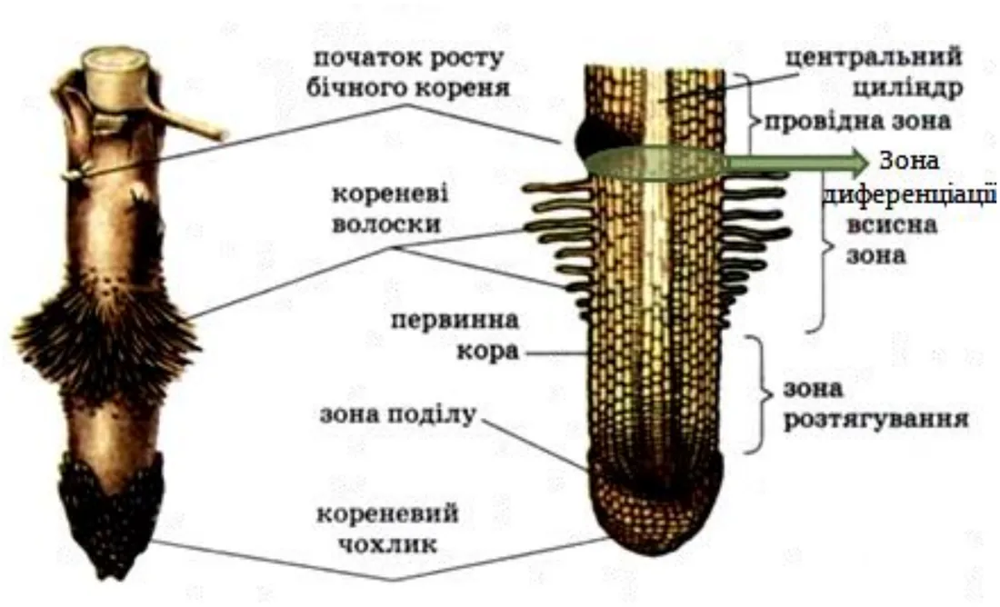

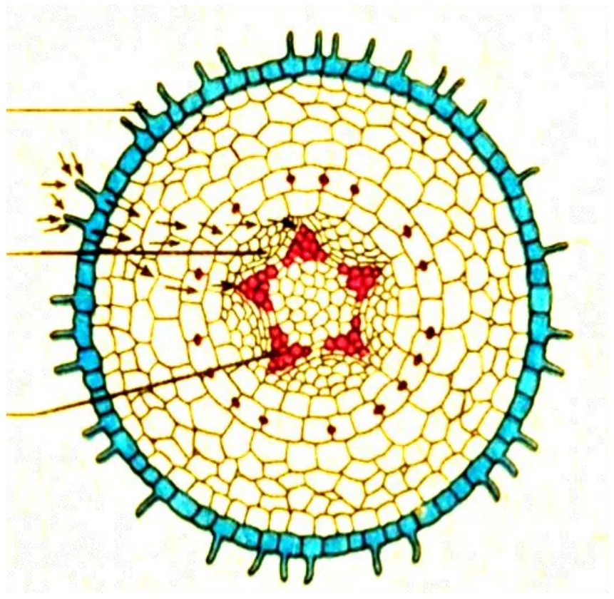
Кореневі волоски — вирости клітин ризодерми, які збільшують всисну поверхню: у чотиримісячного жита близько 14 млрд кореневих волосків із загальною площею ≈ 400 м² — у десятки разів більше, ніж площа надземної частини.[1] Кожен волосок — осмотична система: вакуолярний сік концентрованіший за ґрунтовий розчин, тож вода входить осмосом.
На поперечному зрізі в зоні волосків видно шари: ризодерма (одношарова покривна тканина з волосками) → первинна кора (екзодерма, мезодерма — паренхіма живих клітин, ендодерма) → центральний циліндр (перицикл, що утворює бічні корені, і провідні пучки: ксилема — судини, що несуть воду вгору, та флоема — трубки, що розносять органічні речовини). Судини покритонасінних — порожнисті трубки з мертвих клітин (0,1–2 м) без плазмодесм між ними, голонасінні користуються трахеїдами.
4.2Радіальний шлях: апопласт, симпласт і пояски Каспарі
У рослині є два типи шляхів руху води всередині тканин. Симпласт — сукупність протопластів усіх клітин тканини, з'єднаних тонкими цитоплазматичними каналами — плазмодесмами. Апопласт — позаклітинний простір: клітинні стінки й міжклітинники. По апопласту вода рухається швидше, бо опір менший.
З кореневих волосків вода проходить первинною корою переважно по апопласту й доходить до ендодерми. Радіальні стінки ендодерми мають пояски Каспарі — кільцеподібні потовщення з лігніну (твердого полімеру) й суберину (корковоподібної речовини), непроникні для води. Апопластний шлях тут перекритий, тож вода мусить увійти в протопласт ендодермальної клітини — зокрема через пропускні клітини, у яких поясків немає, — і далі йти по симпласту. Завдяки цьому рослина фільтрує розчин: через мембрани пройде не все, що було в ґрунті. У перициклі вода знову рухається апопластом і виходить у судини ксилеми.

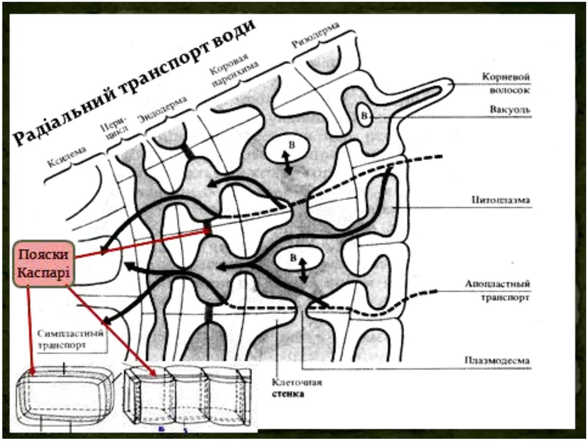
Вимкніть пояски Каспарі — і побачите, що апопласт «пускає» все в судини; ввімкніть — вода змушена пройти крізь протопласти ендодерми.
05Рух води по рослині: два кінцеві двигуни
Вода в рослині рухається одностороннім потоком знизу вгору. Його забезпечують два «двигуни»: нижній кінцевий (корінь) і верхній кінцевий (листок), а також фізичні сили зчеплення в судинах.[1]
5.1Нижній кінцевий двигун: кореневий тиск, плач і гутація
Нижній кінцевий двигун (НКД) — це кореневий тиск. Як він виникає: клітини паренхіми, що оточують судини, іонними помпами (білками плазмалеми, які за рахунок енергії АТФ перекачують іони) викидають мінеральні речовини й метаболіти в порожнину судини. Концентрація розчину в ксилемі зростає, її водний потенціал знижується, і вода входить у судини осмосом; стінки судин лігніфіковані й не розтягуються, тому в корені накопичується гідростатичний тиск. Він виштовхує ксилемний розчин нагору.
Дві яскраві ознаки роботи НКД:
- Плач рослин — виділення пасоки (води й розчинених речовин) із зрізаного чи пошкодженого стебла; найпомітніший ранньою весною (кореневий тиск біля основи стовбура дерев зазвичай становить 1–2 атм), коли листя ще немає й транспірація відсутня.
- Гутація — виділення крапель води на кінчиках і краях листків через гідатоди (особливі порові утворення). Відбувається вночі й уранці, коли кореневий тиск підвищується, повітря вологе (тож випаровуватися нікуди), а погода помірно тепла.

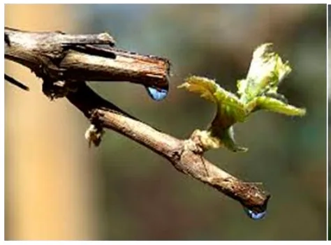

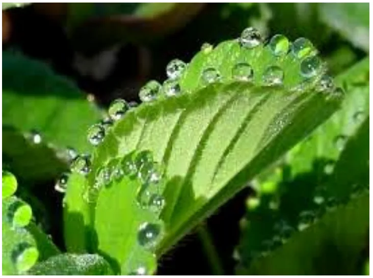

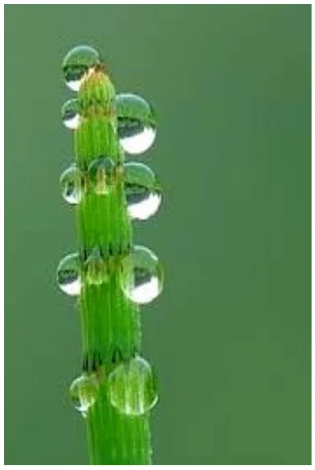
5.2Верхній кінцевий двигун: транспірація і зчеплення в судинах
Верхній кінцевий двигун (ВКД) — транспірація: випаровування води з листка. Коли вода випаровується з клітинних стінок мезофілу (внутрішньої тканини листка), водний потенціал в апопласті знижується, і з сусідніх клітин та судин осмотично надходить нова вода. Це «тягне» стовпчик води по ксилемі, як соломинку.
Стовпчик не рветься завдяки двом силам: когезії — зчепленню молекул води між собою (через водневі зв'язки) — та адгезії — прилипанню їх до стінок судин. Тому вода піднімається на десятки метрів, хоча кореневий тиск (≈ 1 атм) спромігся б «підняти» її лише на метри. У спекотну погоду ВКД — головний двигун, а НКД — допоміжний; вночі й навесні — навпаки.

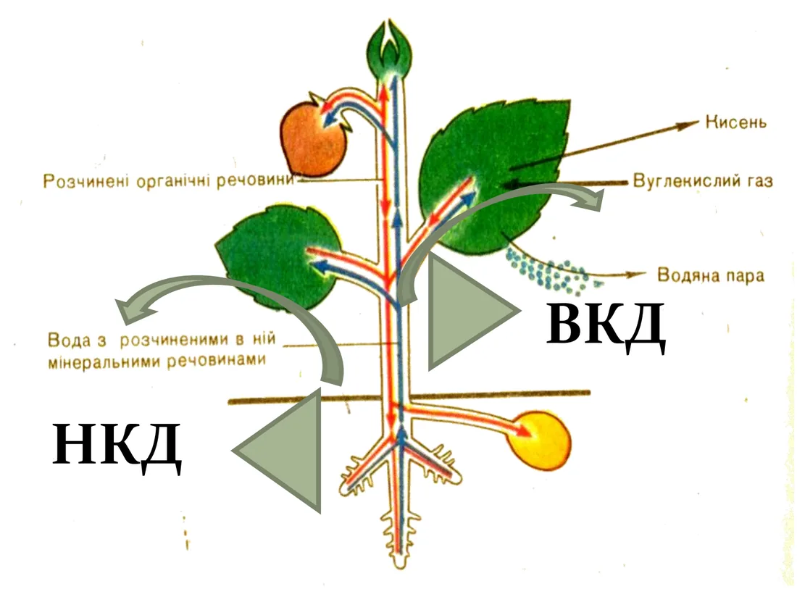
Керуйте світлом, вологістю повітря й запасом води в ґрунті: коли працює який двигун, коли виникає гутація і плач, куди «тече» вода за водним потенціалом.
06Транспірація: листок і продихи
Органом транспірації слугує листок, і його будова підпорядкована цій функції. Зверху листок вкриває одношаровий епідерміс із кутикулою — водонепроникним шаром із кутину (воскоподібної речовини), часто з додатковим воском, волосками чи лусочками. Під епідермісом — мезофіл: стовпчастий (палісадний) — для фотосинтезу, і губчастий — для газообміну й транспірації, з густою мережею міжклітинників (повітряних проміжків). Внутрішня поверхня листка в рази більша за зовнішню.[1]
6.1Етапи транспірації та її види
- Вода надходить по ксилемі до клітинних стінок губчастого мезофілу.
- Вода випаровується в міжклітинні простори.
- Водяна пара дифундує в атмосферу через продихи (а також кутикулу й сочевички).

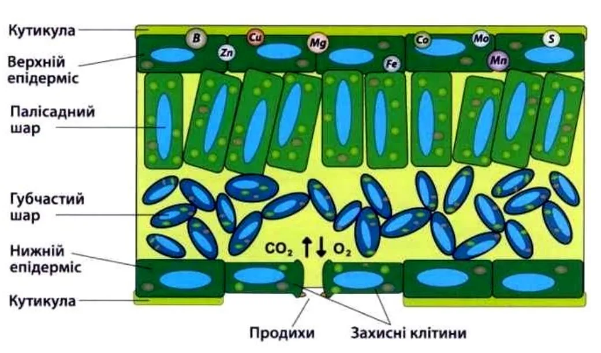

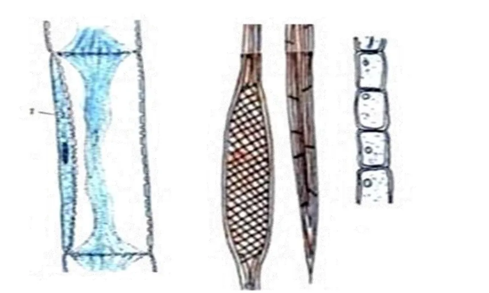
Розрізняють три види транспірації:
- Продихова — через продихи; домінує в нормальних умовах і піддається регуляції.
- Кутикулярна — через поверхню кутикули; зазвичай нижча, але важлива, коли продихи закриті. Вона залежить від товщини кутикули: у молодих листків із тонкою кутикулою — 50–70 % усієї транспірації, у зрілих — близько 7 %.
- Лентикулярна — через сочевички (нещільні ділянки перидерми на пагонах і стовбурах), потрібна для газообміну багаторічних органів.

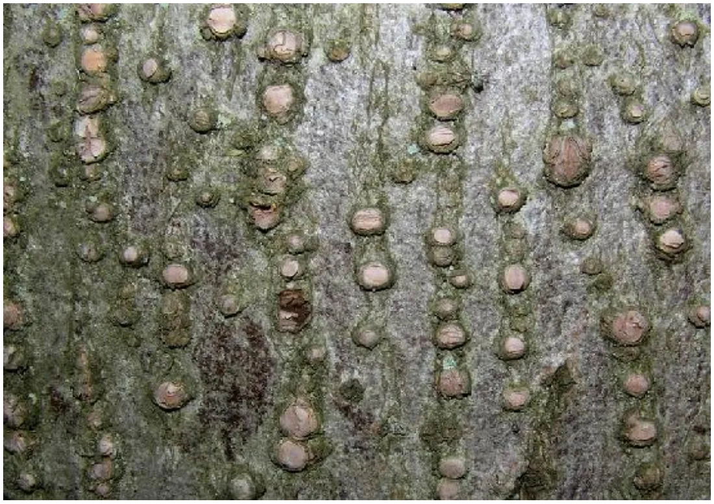
6.2Продихи: як рослина регулює витрати води
Продих складається з двох замикаючих клітин бобоподібної форми, між якими лежить продихова щілина. Ключ до механізму — нерівномірні стінки: ті, що біля щілини, потовщені й малоеластичні, протилежні — тонкі й еластичні. Коли в замикаючих клітинах нагромаджуються осмотично активні речовини (іони K⁺ та Cl⁻, малат), вода входить, тургор зростає, тонка стінка розтягується більше — клітини вигинаються назовні, і щілина розкривається. Світло й низька концентрація CO₂ в листку відкривають продихи; нестача води й абсцизова кислота (гормон стресу) їх закривають.

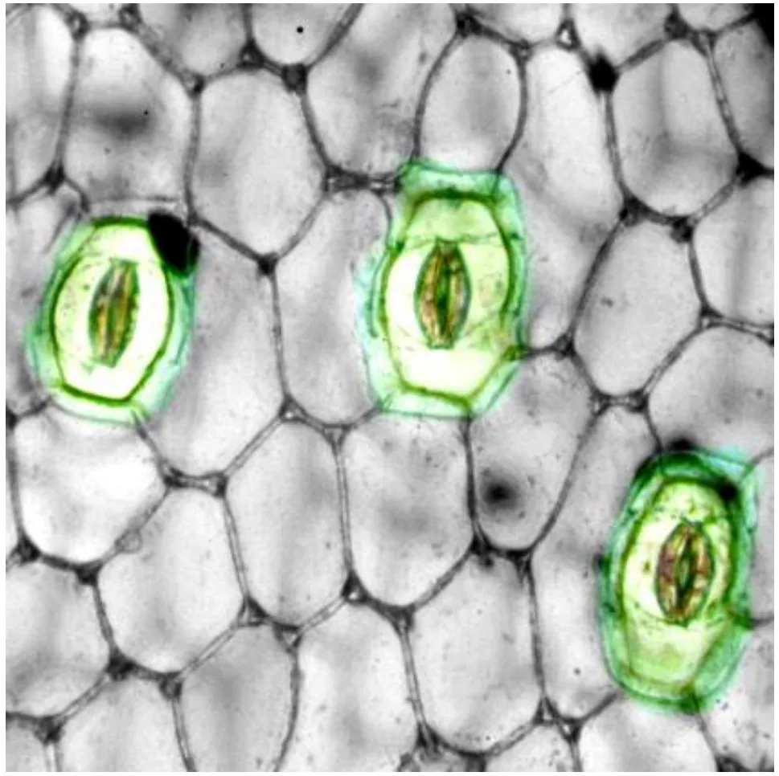
Змінюйте світло, CO₂ та рівень абсцизової кислоти — спостерігайте тургор, вигин замикаючих клітин і транспірацію.
6.3Як вимірюють транспірацію
Транспірацію характеризують п'ять показників:
- Інтенсивність транспірації (ІТ) — маса води (г), випарувана за годину одиницею площі листка (дм²); зазвичай 0,15–1,5 г/(дм²·год).
- Транспіраційний коефіцієнт (ТК) — скільки грамів води витрачено на утворення 1 г сухої речовини; залежить від клімату, ґрунту, виду й сорту.
- Продуктивність транспірації (ПТ) — скільки грамів сухої речовини нагромаджено, поки рослина випарувала 1 кг води.
- Відносна транспірація (ВТ) — відношення води, що випарувала рослина, до води, що випарувалася з вільної водної поверхні такої самої площі за той самий час.
- Коефіцієнт водоспоживання (КВ) — витрата продуктивної вологи (м³) на 1 ц продукції.
Введіть результати «зважувань» рослини — отримайте ІТ, ТК, ПТ і ВТ.
07Екологічні групи рослин за відношенням до води
Рослини по-різному пристосувалися до режиму зволоження — і в будові, і в роботі.[1] Є дві принципово різні стратегії витримати нестачу води: пойкілогідричні організми (мохи, лишайники) просто висихають і впадають у анабіоз — стан, у якому життєві процеси майже зупиняються, а з появою вологи відновлюються; гомойогідричні (більшість вищих рослин) мають механізми регуляції водного режиму, але за сильного зневоднення гинуть.
За відношенням до води вирізняють екологічні групи — від водних до пустельних. Оберіть групу в моделі, щоб побачити типові пристосування.
Клацайте на назви груп: схема показує рівень води, коріння, листки й ключові пристосування.
Окрема стратегія — уникнення посухи: ефемери (однорічники, що встигають вегетувати кілька тижнів ранньою весною, наприклад вероніка весняна) й ефемероїди (багаторічники, що більшу частину року «сплять» у вигляді цибулин, бульб чи кореневищ).
08Контрольні питання
Чим відрізняються дифузія й осмос? Що таке осмотична система?
Запишіть співвідношення між P, T і S. Як вони змінюються, коли клітина насичується водою?
Що таке плазмоліз і циторіз? У чому різниця?
Назвіть форми води в ґрунті й вкажіть, які з них доступні рослинам.
Що таке вологість стійкого в'янення та польова вологоємність? Як визначити запас доступної води?
Опишіть радіальний шлях води в корені. Яку роль відіграють пояски Каспарі?
Як виникає кореневий тиск? Наведіть приклади його прояву.
Що таке верхній кінцевий двигун і чому стовпчик води в судинах не рветься?
Як працюють замикаючі клітини продиху? Які чинники відкривають і закривають продихи?
Які види транспірації вам відомі? Коли кутикулярна транспірація має значення?
Дайте визначення ІТ, ТК, ПТ і ВТ. Яка рослина «економніша», якщо ТК у неї менший?
Порівняйте екологічні групи: гідатофіти, гігрофіти, мезофіти, ксерофіти. Чим сукуленти відрізняються від склерофітів?
09Джерела
Теоретичний матеріал цієї статті викладено за навчальним посібником; рисунки, позначені відповідним підписом, також взято з нього. Схеми й моделі, що не мають такого підпису, створені для цього конспекту.
- Прилуцька С. В., Бабицький А. І., Нестерова Н. Г., Ткаченко Т. А., Бойко О. А., Дащенко А. В. Фізіологія рослин: навчальний посібник. Частина ІІ. — Київ: НУБіП України, 2024. — 215 с. ISBN 978-617-8368-56-2. Розділ 1 «Водний режим рослин» (автор — Бойко О. А.).